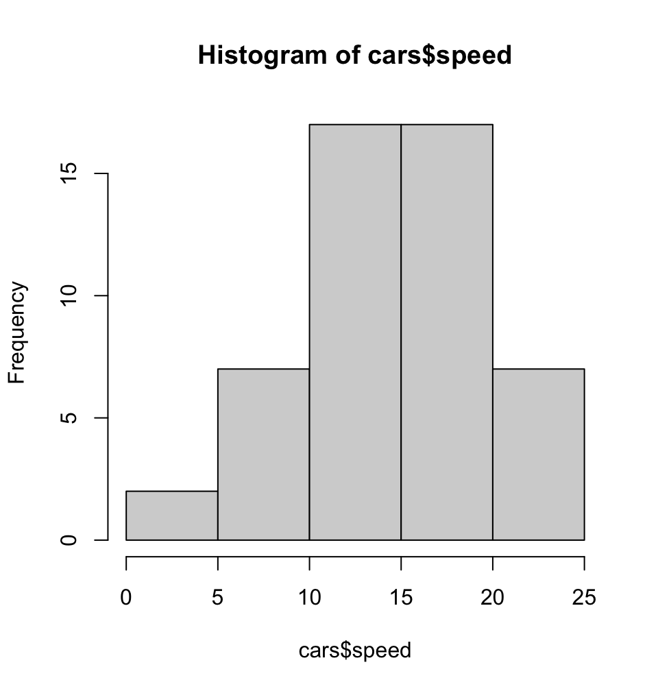
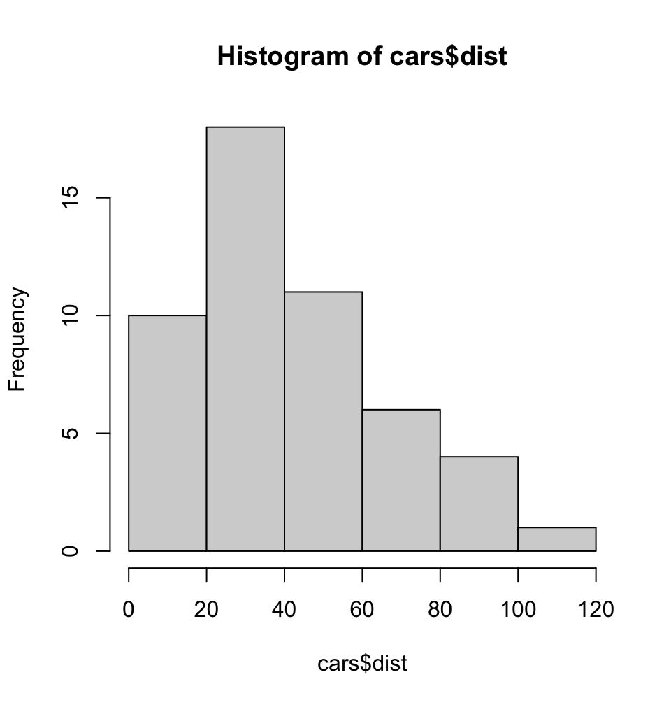
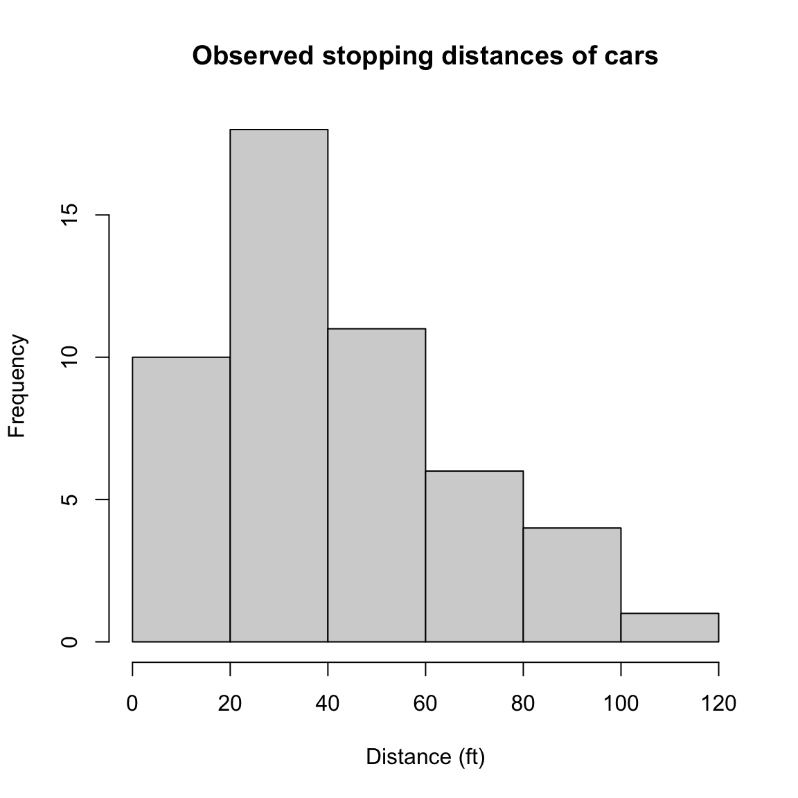
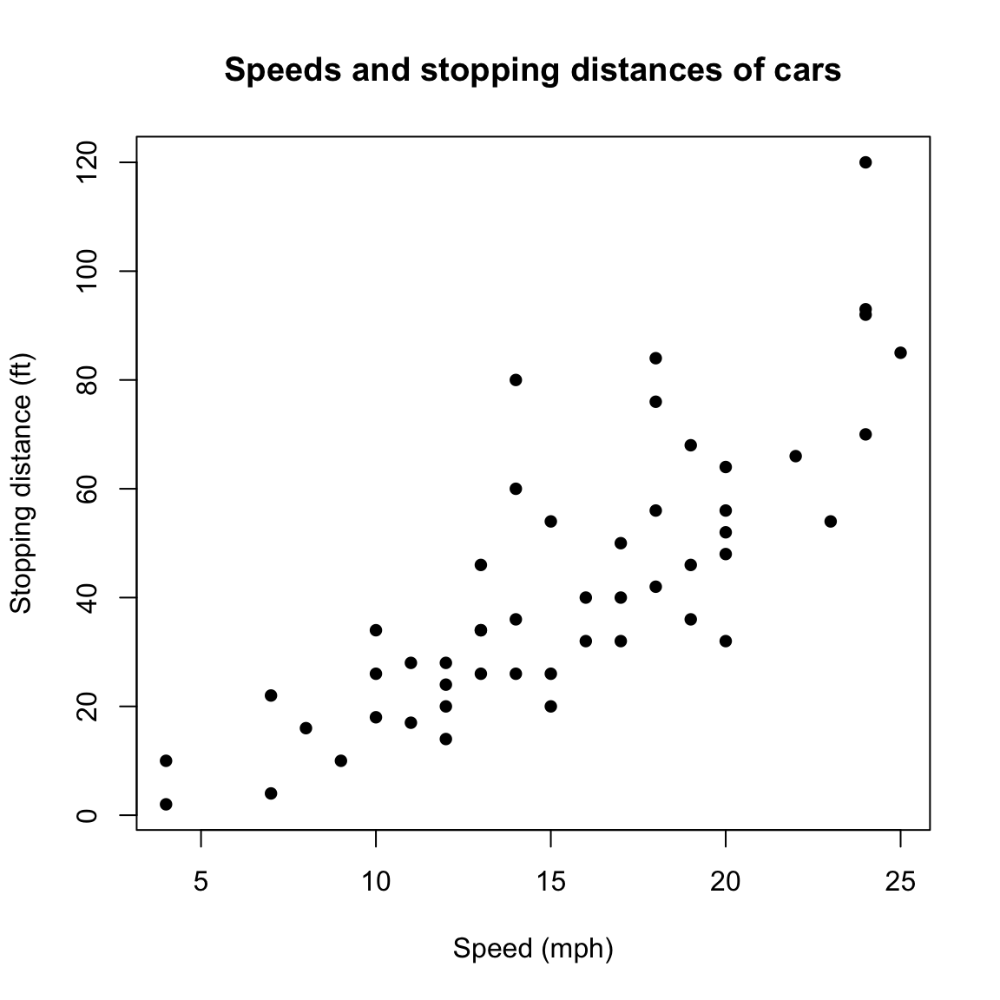

[1] 343Syllabus and Introduction to R, RStudio, and Quarto
CS&SS 508 • Lecture 1
3 October 2023
Victoria Sass
Introductions & Syllabus
Welcome!
- Introductions
- Syllabus
- Lecture 1: Introduction to R, RStudio, and Quarto
Introductions
Let’s start by going around the room and sharing our:
Name and pronouns
Program and year
Experience with programming (in R or more generally)
One word that best describes your feelings about taking this class
Best meal you’ve ever eaten
Syllabus
The syllabus (as well as lots of other information) can be found on our course website:
https://vsass.github.io/CSSS508
Feel free to follow along online as I run through the syllabus!
Course goals
This course is intended to give students a foundational understanding of programming in the statistical language R. General topics include:
- Exploring data with graphics and summaries
- Cleaning, preparing, and linking data for analyses
- Foundational programming skills such as functions and loops
- Organizing projects and creating reproducible research
. . .
We won’t really cover any statistics in this course but the goal is for you to increase your coding comprehension and learn the tools you need to be able to focus on statistics instead of coding in any future/current CSSS or STAT courses!
Logistics
Sessions:
Lecture: An overview of that week’s topic where we’ll learn key skills, concepts, and principles.
- Tuesdays, 4:30-5:20pm (Gowen 201)
Labs: An interactive session where we’ll put what we’ve learned in lecture into practice.
- Lab AA: Tuesday, 5:30-6:20pm (Savery 117)
- Lab AB: Thursday, 4:30-5:20pm (Savery 117)
Office Hours: Thursdays, 2-4pm
(on Zoom; link on Canvas)
Course Website: https://vsass.github.io/CSSS508
Contact: Message me on our Canvas course page rather than sending me an email. I get far too many emails a day and I don’t want to miss your message!
Schedule
- Week 1: Introduction to R, RStudio, and Quarto
- Week 2: Visualizing Data
- Week 3: Workflow and Reproducibility
- Week 4: Importing, Exporting, and Cleaning Data
- Week 5: Manipulating and Summarizing Data
- Week 6: Data Structures & Types
- Week 7: Working with Text Data
- Week 8: Writing Functions
- Week 9: Iteration
- Week 10: Next Steps
Prerequisites, Materials, and Texts
Prerequisites: None
Materials: All course materials are provided on the course website. This includes:
- These slides and the code used to generate them.
- An R script for the slides to follow along in class.
- Homework instructions and/or templates
- Useful links to other resources.
Laptops: It’s helpful to bring a laptop to class. If you don’t have one, you can use the lab computers or borrow one for free from the UW Student Technology Loan Program.
Textbooks: This course has no textbook. However, I will provide optional reading recommendations that I’ve found really useful!
Grading
Final grade: Credit/No Credit (C/NC); You need at least 60% to get Credit.
- Homework (75%; assessed by peers): 8 total homeworks; assessed on a 0-3 point rubric. Assigned at the end of lab sections and due a week later.
- Peer Grading (25%; assessed by the instructor): One per homework, assessed on a binary “good”/“not good” scale. Due 5 days after homework due date.
Assignment/peer grading instructions and deadlines can be found on the Homework page of the course website. All homework will be turned in on Canvas.
Ugh, peer grading?
Yes, because:
You will write your reports better knowing others will see them
You learn alternate approaches to the same problem
You will have more opportunities to practice and have the material sink in
. . .
How to peer review:
- Leave constructive comments: You’ll only get the point if you write at least 1 full paragraph that includes
- Any key issues from the assignment and,
- Points out something positive in your peer’s work.
- Email me if you would like your assignment to be regraded or provide feedback if no peer review was given.
Academic Integrity
Academic integrity is essential to this course and to your learning. Violations of the academic integrity policy include but are not limited to:
- Copying from a peer
- Copying from an online resource
- Using resources from a previous iteration of the course.
. . .
I hope you will collaborate with peers on assignments and use Internet resources when questions arise to help solve issues. The key is that you ultimately submit your own work.
. . .
Anything found in violation of this policy will be automatically given a score of 0 with no exceptions. If the situation merits, it will also be reported to the UW Student Conduct Office, at which point it is out of my hands. If you have any questions about this policy, please do not hesitate to reach out and ask.
Classroom Environment
I’m committed to fostering a friendly and inclusive classroom environment in which all students have an equal opportunity to learn and succeed.
. . .
- Names & Pronouns: Everyone should be addressed respectfully and correctly. Feel free to send me your name/pronouns anytime.
. . .
- Covid: Covid creates unique circumstances for each of us, which may limit your ability to fully participate in this course. You never need to apologize to me for anything pandemic-related. Let me know how I can help!
. . .
- Accessibility & Accomodations: See course website for information on health, disability, and religious accomodations.
. . .
- Feedback: I encourage feedback at any point in the quarter. I will also send out a mid-quarter evaluation around Week 5.
. . .
- Getting Help: If you ever find yourself struggling, know I’m here to help! Try chatting after class, messaging me on Canvas, or coming to office hours.
Asking Questions
Don’t ask like this:
tried lm(y~x) but it iddn’t work wat do
. . .
Instead, ask like this:
y <- seq(1:10) + rnorm(10) x <- seq(0:10) model <- lm(y ~ x)Running the block above gives me the following error, anyone know why?
Error in model.frame.default(formula = y ~ x, drop.unused.levels = TRUE) : variable lengths differ (found for 'x')
If you ask me a question directly over Slack I may send out your question (anonymously) along with my answer to the whole course.
# Questions?{.section-title background-color=“#99a486”}
Introduction to R, RStudio, and Quarto
A Note on Slide Formatting
Bold usually indicates an important vocabulary term. Remember these!
. . .
Italics indicate emphasis but also are used to point out things you must click with a mouse.
- For example: “Please click File > Print”
. . .
Code represents R code you could use to perform actions.
- For example: “Press
Ctrl-Pto open the print dialogue.”
. . .
Code chunks that span the page represent actual R code embedded in the slides.
Why R?
R is a programming language built for statistical computing.
If one already knows Stata or similar software, why use R?
. . .
- R is free.
. . .
- R has a very large community.
. . .
- R can handle virtually any data format.
. . .
- R makes replication easy.
. . .
- R is a language so it can do everything.
. . .
- R skills transfer to other languages like Python and Julia.
R Studio
R Studio is a “front-end” or integrated development environment (IDE) for R that can make your life easier.
. . .
We’ll show RStudio can… . . .
- Organize your code, output, and plots
. . .
- Auto-complete code and highlight syntax
. . .
- Help view data and objects
. . .
- Enable easy integration of R code into documents with Quarto
. . .
It can also…
Manage
gitrepositoriesRun interactive tutorials
Handle other languages like C++, Python, SQL, HTML, and shell scripting
Selling You on Quarto
Built upon many of the developments of the R Markdown ecosystem, Quarto distills them into one coherent system and additionally expands its functionality by supporting other programming languages besides R, including Python and Julia.

Selling You on Quarto
The ability to create Quarto files in R is a powerful advantage. It allows us to:
- Document analyses by combining text, code, and output
- No copying and pasting into Word
- Easy for collaborators to understand
- Show as little or as much code as you want
- Produce many different document types as output
- PDF documents
- HTML webpages and reports
- Word and PowerPoint documents
- Presentations (like these slides)
- Books
- Theses/Dissertations 😉🎓
- Websites (like the one for this course!)
- Works with LaTeX and HTML for math and more formatting control
. . .
We’ll get back to this shortly!
Downloading R and RStudio
If you don’t already have R and RStudio on your machine, now is the time to do so!
Downloading R and RStudio
If you don’t already have R and RStudio on your machine, now is the time to do so!
- Go to the course homepage, https://vsass.github.io/CSSS508
- Click the Download R link and download R to your machine.
- Afterwards, click the Download RStudio link and download RStudio to your machine.
- Lastly, click the Download Quarto link and download Quarto to your machine.
. . .
Alright, that’s it for lecture today! I’ll see most of you over in Savery 117 for our lab section and I’ll see the rest of you there on Thursday!
Getting Started
Open up RStudio now and choose File > New File > R Script.
Then, let’s get oriented with the interface:
Top Left: Code editor pane, data viewer (browse with tabs)
Bottom Left: Console for running code (
>prompt)Top Right: List of objects in environment, code history tab.
Bottom Right: Tabs for browsing files, viewing plots, managing packages, and viewing help files.
Editing and Running Code
There are several ways to run R code in RStudio:
. . .
- Highlight lines in the editor window and click Run at the top or hit
Ctrl+Enteror⌘+Enterto run them all.
Editing and Running Code
There are several ways to run R code in RStudio:
Highlight lines in the editor window and click Run at the top or hit
Ctrl+Enteror⌘+Enterto run them all.With your caret1 on a line you want to run, hit
Ctrl+Enteror⌘+Enter. Note your caret moves to the next line, so you can run code sequentially with repeated presses.
1 This thing is the caret: |
. . .
- Type individual lines in the console and press
Enter.
. . .
- In quarto documents, click within a code chunk and click the green arrow to run the chunk. The button beside that runs all prior chunks.
. . .
The console will show the lines you ran followed by any printed output.
Incomplete Code
If you mess up (e.g. leave off a parenthesis), R might show a + sign prompting you to finish the command:
> (11-2
+Finish the command or hit Esc to get out of this.
R as a Calculator
In the console, type 123 + 456 + 789 and hit Enter.
. . .
123 + 456 + 789[1] 1368. . .
The [1] in the output indicates the numeric index of the first element on that line.
. . .
Now in your blank R document in the editor, try typing the line sqrt(400) and either clicking Run or hitting Ctrl+Enter or ⌘+Enter.
. . .
sqrt(400)[1] 20Functions
sqrt() is an example of a function in R.
Arguments are the inputs to a function2. In this case, the only argument to sqrt() is x which can be a number or a vector of numbers.
2 Functions can have a wide range of arguments and some are required for the function to run, while others remain optional. You can see from each functions’ help page which are not required because they will have an = with some default value pre-selected. If there is no = it is up to the user to define that value and it’s therefore a required specification.
. . .
The basic template of a function is
function_name(argument1, argument2 = value2, argument3 = value3...)
Help
If we didn’t have a good guess as to what sqrt() will do, we can type ?sqrt in the console and look at the Help panel on the right.
?sqrtIf you’re trying to look up the help page for a function and can’t remember its name you can search by a keyword and you will get a list of help pages containing said keyword.
??exponential
Help
Help files provide documentation on how to use functions and what functions produce. They will generally consist of the following sections:
- Description - What does it do?
- Usage - How do you write it?
- Arguments - What arguments does it take; which are required; what are the defaults?
- Details - A more in-depth description
- Value - What does the function return?
- See Also - Related R functions
- Examples - Example (& reproducible) code
Objects
R stores everything as an object, including data, functions, models, and output.
. . .
Creating an object can be done using the assignment operator: <- . . .
new.object <- 144. . .
Operators like <- are functions that look like symbols but typically sit between their arguments (e.g. numbers or objects) instead of having them inside () like in sqrt(x).
. . .
We do math with operators, e.g., x + y. + is the addition operator!
Calling Objects
You can display or “call” an object simply by using its name.
new.object[1] 144Naming Objects
Object names must begin with a letter and can contain letters, numbers, ., and _.
Try to be consistent in naming objects. RStudio auto-complete means long, descriptive names are better than short, vague ones! Good names save confusion later!
. . .
- snake_case, where you separate lowercase words with
_is a common and practical naming convention that I strongly recommend.
snake_case_is_easy_to_read
CamelCaseIsAlsoAnOptionButSortOfHardToReadQuickly
some.people.use.periods
And_some.People_ARETRUErebels. . .
Remember that object names are CaSe SeNsItIvE!!
Also, TYPOS MATTER!
Using Objects
An object’s name represents the information stored in that object, so you can treat the object’s name as if it were the values stored inside. . . .
new.object + 10[1] 154new.object + new.object[1] 288sqrt(new.object)[1] 12Vectors
A vector is a series of elements, such as numbers.
. . .
You can create a vector using the function c() which stands for “combine” or “concatenate”. . . .
new.object <- c(4, 9, 16, 25, 36)
new.object[1] 4 9 16 25 36. . .
If you name an object the same name as an existing object, it will overwrite it.
. . .
You can provide a vector as an argument for many functions. . . .
sqrt(new.object)[1] 2 3 4 5 6More Complex Objects
There are other, more complex data types in R which we will discuss later in the quarter! These include matrices, arrays, lists, and dataframes.
Most data sets you will work with will be read into R and stored as a dataframe, so this course will mainly focus on manipulating and visualizing these objects.
Quarto
Quarto Documents
Let’s try making an Quarto file:
- Choose File > New File > Quarto Document…
- Make sure HTML Output is selected
- In the Title box call this test document
my_first_qmd.qmdand click Create - Save this document somewhere (you can delete it later) (either with File > Save or clicking the 💾 icon towards the top left of the source pane)
- Click the ➡️Render button
- Watch the progress in the Background Jobs tab of the console pane, then gaze upon your result!
. . .
If you want to create PDF output in the future, you’ll need to run the following code in your console.
install.packages("quarto")
install.packages('tinytex')
tinytex::install_tinytex()Quarto Headers
The header of an .qmd file is a YAML4code block, and everything else is part of the main document.
4 You can read a bit more about YAML headers in Quarto here and this reference page lists all options possible for html output.
---
title: "Untitled"
author: "Victoria Sass"
date: "October 3, 2023"
output: html_document
---To mess with global formatting, you can modify the header5.
5 Be careful though, YAML is space-sensitive; indents matter!
output:
html_document:
theme: readableQuarto Syntax
Output
bold/strong emphasisitalic/normal emphasis
Header
Subheader
Subsubheader
Block quote from famous person
Syntax
**bold/strong emphasis**
*italic/normal emphasis*
# Header
## Subheader
### Subsubheader
> Block quote from
> famous personQuarto Syntax6 Continued6 This is all basic markdown syntax which you can learn about here.
6 This is all basic markdown syntax which you can learn about here.
Output
- Ordered lists
- Are real easy
- Even with sublists
- Or with lazy numbering
- Unordered lists
- Are also real easy
- Also even with sublists
- And subsublists
- Also even with sublists
Syntax
1. Ordered lists
1. Are real easy
1. Even with sublists
1. Or with lazy numbering
* Unordered lists
* Are also real easy
+ Also even with sublists
- And subsublistsFormulae and Syntax
Output
Include math \(y= \left( \frac{2}{3} \right)^2\) inline.
Or centered on your page like so:
\[\frac{1}{n} \sum_{i=1}^{n} x_i = \bar{x}_n\]
Or write code-looking font.
Or a block of code:
y <- 1:5
z <- y^2Syntax
Include math $y= \left(\frac{2}{3} \right)^2$ inline.
Or centered on your page like so:
$$\frac{1}{n} \sum_{i=1}^{n}x_i = \bar{x}_n$$
Or write`code-looking font`.
Or a block of code:
```{r}
y <- 1:5
z <- y^2
```Quarto Tinkering
Quarto docs can be modified in many ways. Visit these links for more information.
R Code in Quarto
Inside RMarkdown, lines of R code are called chunks. Code is sandwiched between sets of three backticks and {r}. This chunk of code…
```{r}
summary(cars)
```Produces this output in your document:
summary(cars) speed dist
Min. : 4.0 Min. : 2.00
1st Qu.:12.0 1st Qu.: 26.00
Median :15.0 Median : 36.00
Mean :15.4 Mean : 42.98
3rd Qu.:19.0 3rd Qu.: 56.00
Max. :25.0 Max. :120.00 Chunk Options
Chunks have options that control what happens with their code. They are specified as special comments at the top of a block. For example:
```{r}
#| label: bar-chart
#| eval: false
#| fig-cap: "A line plot on a polar axis"
```Chunk Options
Some useful and common options include:
echo: false- Keeps R code from being shown in the documenteval: false- Shows R code in the document without running itinclude: false- Hides all output but still runs code (good forsetupchunks where you load packages!)output: false- Doesn’t include the results of that code chunk in the outputcache: true- Saves results of running that chunk so if it takes a while, you won’t have to re-run it each time you re-render the documentfig.height: 5, fig.width: 5- modify the dimensions of any plots that are generated in the chunk (units are in inches)fig.cap: "Text"- add a caption to your figure in the chunk
Playing with Chunk Options
Try adding or changing the chunk options for the two chunks in my_first_Rmd.qmd and re-rendering to check what happens.
```{r}
#| eval: false
summary(cars)
```In-Line R code
Sometimes we want to insert a value directly into our text. We do that using code in single backticks starting off with r.
. . .
Four score and seven years ago is the same as `r 4*20 + 7` years.. . .
Four score and seven years ago is the same as 87 years.
. . .
Maybe we’ve saved a variable in a chunk we want to reference in the text:
x <- sqrt(77) # <- is how we assign objects. . .
The value of `x` rounded to the nearest two decimals is `r round(x, 2)`.. . .
The value of x rounded to the nearest two decimals is 8.77.
This is Amazing!
Having R dump values directly into your document protects you from silly mistakes:
. . .
- Never wonder “how did I come up with this quantity?” ever again: Just look at your formula in your .qmd file!
. . .
- Consistency! No “find/replace” mishaps; reference a variable in-line throughout your document without manually updating if the calculation changes (e.g. reporting sample sizes).
. . .
- You are more likely to make a typo in a “hard-coded” number than you are to write R code that somehow runs but gives you the wrong thing.
Example: Keeping Dates
In your YAML header, make the date come from R’s Sys.time() function by changing:
date: "October 3, 2023"to
date: "`r Sys.time()`"Data Frames
What’s Up with cars?
In the sample Quarto document you are working on, we can load the built-in data cars, which loads as a dataframe, a type of object mentioned earlier. Then, we can look at it in a couple different ways.
. . .
data(cars) loads this dataframe into the Global Environment.
. . .
View(cars) pops up a Viewer pane (“interactive” use only, don’t put in Quarto document!).
. . .
head(cars, 5) # prints first 5 rows, can use tail() too speed dist
1 4 2
2 4 10
3 7 4
4 7 22
5 8 16Tell Me More About cars
str() displays the structure of an object:
str(cars) # str[ucture]'data.frame': 50 obs. of 2 variables:
$ speed: num 4 4 7 7 8 9 10 10 10 11 ...
$ dist : num 2 10 4 22 16 10 18 26 34 17 .... . .
summary() displays summary information 7:
7 Note R is object-oriented: summary() provides different information for different types of objects!
summary(cars) speed dist
Min. : 4.0 Min. : 2.00
1st Qu.:12.0 1st Qu.: 26.00
Median :15.0 Median : 36.00
Mean :15.4 Mean : 42.98
3rd Qu.:19.0 3rd Qu.: 56.00
Max. :25.0 Max. :120.00 Ugly Pictures of cars
hist() generates a histogram of a vector. Note you can access a vector that is a column of a dataframe using $, the extract operator.
hist(cars$speed) # Histogram
hist(cars$dist)
Drawing Slightly Less Ugly Pictures
hist(cars$dist,
xlab = "Distance (ft)", # X axis label
main = "Observed stopping distances of cars") # Title
Math with cars
dist_mean <- mean(cars$dist)
print(dist_mean)[1] 42.98speed_mean <- mean(cars$speed)
print(speed_mean)[1] 15.4Drawing Still Ugly Pictures
plot(dist ~ speed, data = cars,
xlab = "Speed (mph)",
ylab = "Stopping distance (ft)",
main = "Speeds and stopping distances of cars",
pch = 16) # Point size
swiss Time
Let’s switch gears to the swiss data frame built in to R.
. . .
First, use ?swiss to see what things mean.
. . .
Then, load it using data(swiss)
. . .
Add chunks to your Quarto document inspecting swiss, defining variables, doing some exploratory plots using hist or plot.
Looking at swiss
pairs() is a pairwise scatterplot function. Good for a quick look at small datasets, but mostly useless for larger data.
Installing Packages
Let’s make a table that looks a little less code-y in the output. To do this, we’ll want to install a package called gt. Packages contain pre-made functions and/or data we can use. R’s strength is its wide variety of packages!
In the console: install.packages("gt").
. . .
- Note that unlike the
library()command, the name of a package to be installed must be in quotes. This is because the name here is a search term (text, not an object!) while forlibrary()it is an actual R object.
. . .
- Once you install a package, you don’t need to re-install it until you update R. Consequently, you should not include
install.packages()in any markdown document or R script!
Making Tables
| Fertility | Agriculture | Examination | Education | Catholic | Infant.Mortality |
|---|---|---|---|---|---|
| Min. :35.00 | Min. : 1.20 | Min. : 3.00 | Min. : 1.00 | Min. : 2.150 | Min. :10.80 |
| 1st Qu.:64.70 | 1st Qu.:35.90 | 1st Qu.:12.00 | 1st Qu.: 6.00 | 1st Qu.: 5.195 | 1st Qu.:18.15 |
| Median :70.40 | Median :54.10 | Median :16.00 | Median : 8.00 | Median : 15.140 | Median :20.00 |
| Mean :70.14 | Mean :50.66 | Mean :16.49 | Mean :10.98 | Mean : 41.144 | Mean :19.94 |
| 3rd Qu.:78.45 | 3rd Qu.:67.65 | 3rd Qu.:22.00 | 3rd Qu.:12.00 | 3rd Qu.: 93.125 | 3rd Qu.:21.70 |
| Max. :92.50 | Max. :89.70 | Max. :37.00 | Max. :53.00 | Max. :100.000 | Max. :26.60 |
Note that we put the summary(swiss) function call inside the pander() call. This is called nesting functions and is very common. I’ll introduce a method next week to avoid confusion from nesting too many functions inside each other
Data Look a Little Nicer This Way
pander(head(swiss, 5), style = "rmarkdown", split.tables = 120)| Fertility | Agriculture | Examination | Education | Catholic | Infant.Mortality | |
|---|---|---|---|---|---|---|
| Courtelary | 80.2 | 17 | 15 | 12 | 9.96 | 22.2 |
| Delemont | 83.1 | 45.1 | 6 | 9 | 84.84 | 22.2 |
| Franches-Mnt | 92.5 | 39.7 | 5 | 5 | 93.4 | 20.2 |
| Moutier | 85.8 | 36.5 | 12 | 7 | 33.77 | 20.3 |
| Neuveville | 76.9 | 43.5 | 17 | 15 | 5.16 | 20.6 |
split.tables = 120 tells pander to break a table into multiple tables if it will be over 120 characters wide. Adjust this to get widths just right.
Homework
Homework #1
Write up a .qmd file showing some exploratory analyses of the Swiss fertility data. Upload both the .qmd file and the .html file to Canvas. You must upload BOTH for credit.
. . .
Mix in-line R calculations, R output, and plots with text describing the relationships you see. Include at least two plots. You are encouraged to include more! You must use in-line R calculations/references at least once (e.g. functions like nrow(), mean(), sd(), cor(), median(), min()) and may not hard-code any numbers referenced in your text.
. . .
Your document should be pleasant for a peer to look at, with some organization using sections or lists, and all plots labeled clearly. Use chunk options echo and output to limit the code/output you show in the .html. Discussion of specific values should be summarized in sentences in your text—not as printed code and output—and rounded so as not to be absurdly precise (e.g. round x with round(x, 2)).
Take a look at the template provided on our course website for an idea of what this might look like using a different dataset.
Grading Rubric
0 - Didn’t turn anything in.
. . .
1 - Turned in but low effort, ignoring many directions.
. . .
2 - Decent effort, followed directions with some minor issues.
. . .
3 - Nailed it!
Due dates
- Section AA:
- Homework #1 due Tuesday, October 10th (before lecture)
- Peer grading due Sunday, October 15th (by 4:30pm)
- Section AB:
- Homework #1 due Thursday, October 12th (before lab)
- Peer grading due Tuesday, October 17th (before lecture)
Comments
Anything writen after
#3 will be ignorned by R.3 In Quarto documents, comments only work in code chunks. Outside of a chunk,
#creates headers like “comments” at the top of this slide.. . .
Comments help collaborators and future-you understand what, and more importantly, why you are doing what you’re doing with that specific line/chunk of code.
. . .
Additionally, comments allow you to explain your overall coding plan and record anything important that you’ve discovered along the way.